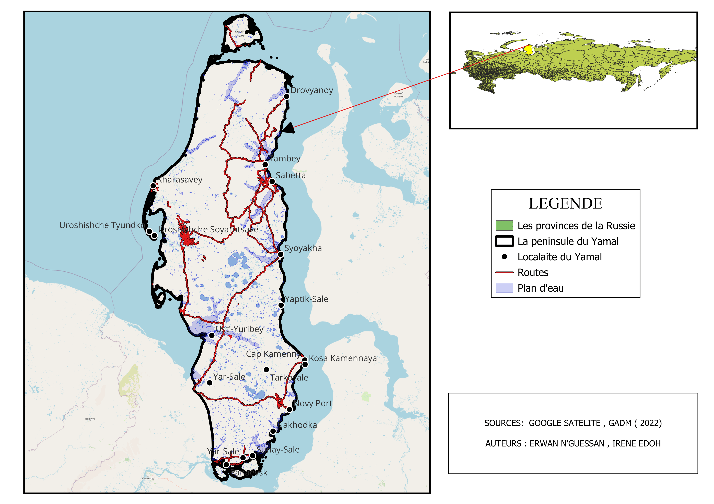
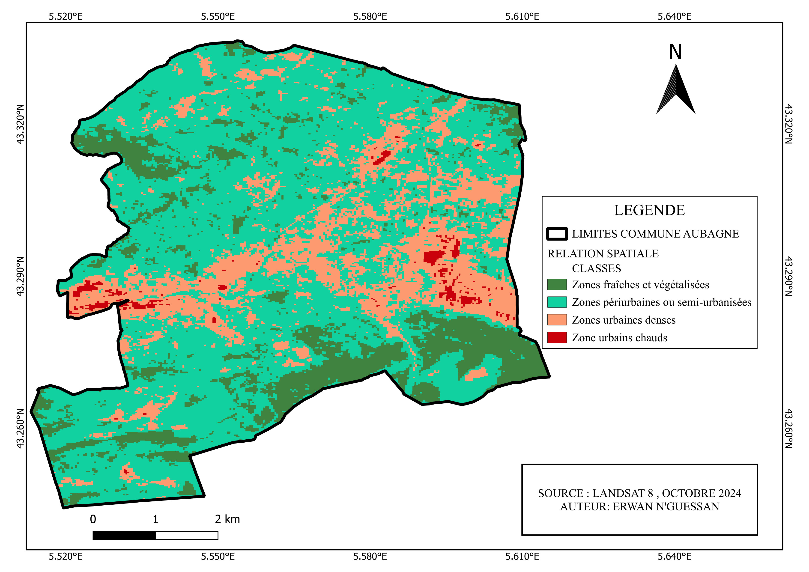
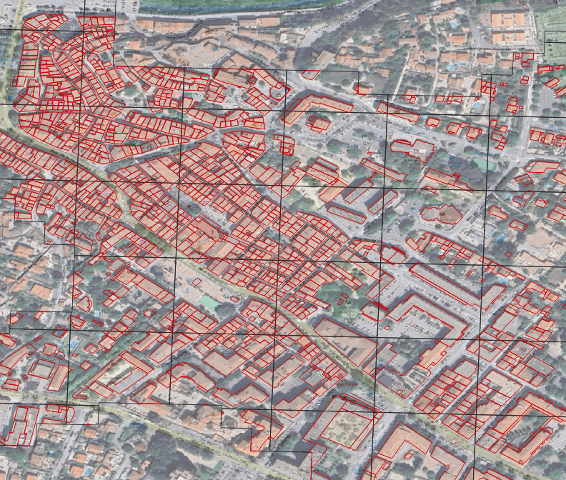
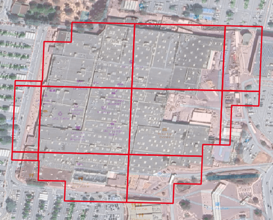
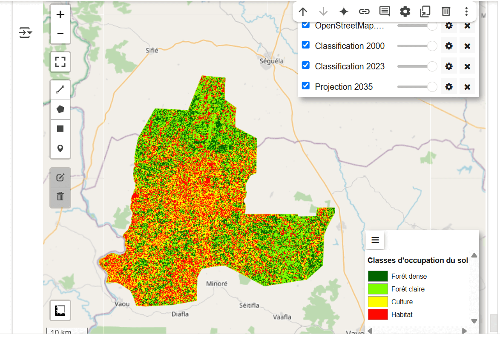

Cartes réalisées

Carte de localisation – Yamal

Relation entre NDVI, Température, Urbanisation

Centre-ville Aubagne – îlot de chaleur

Exemple d’îlot de chaleur urbain

Indice NDVI à Aubagne

Projection forestière à l’horizon 2035